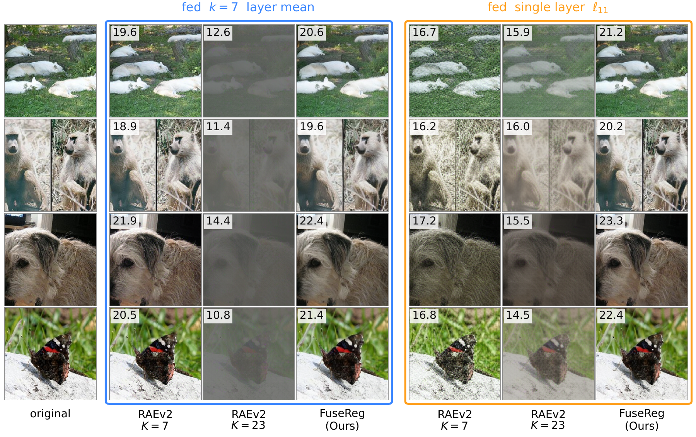
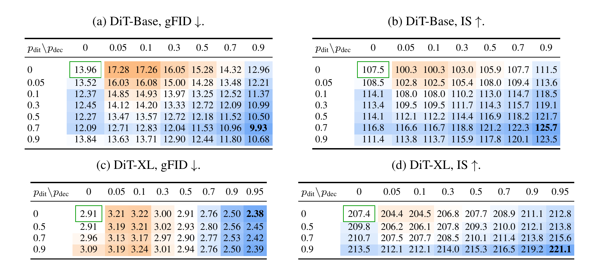
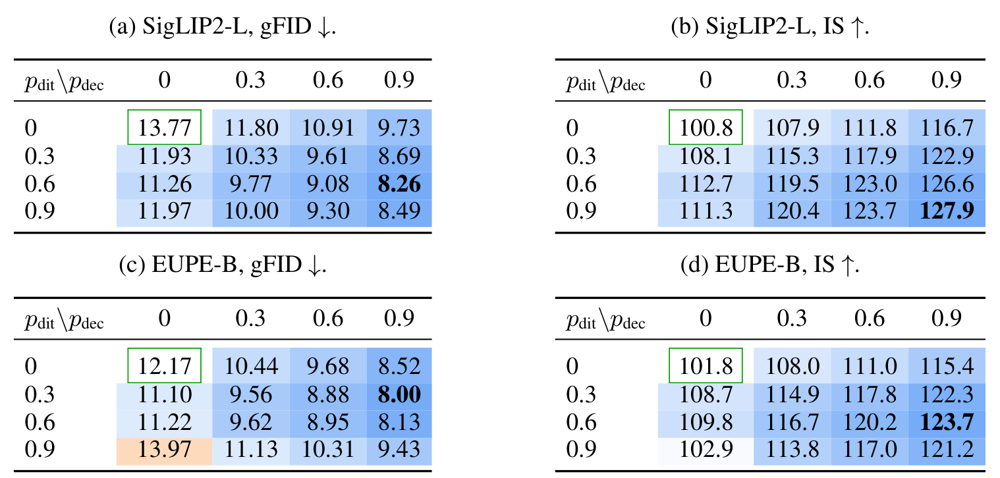

1USC PSI Lab 2Brown University 3Rice University 4University of Aberdeen 5University of Notre Dame 6University of Maryland, College Park 7University of Pennsylvania
TL;DR: A representation autoencoder builds its latent by averaging layers of a frozen vision encoder, and which layers to use is usually picked by hand. FuseReg instead trains the decoder and the diffusion model on a random mix of layers at every step. The resulting decoder reconstructs well from many different mixes, and generated images get better, with no change to the model or its inference cost.
A fixed layer choice forces a trade-off. Shallow encoder layers keep pixel detail, which helps reconstruction; deeper layers are easier for the diffusion model to generate. With RAEv2 on DINOv3-L, using all 23 layers instead of the last 7 raises reconstruction PSNR from 22.58 to 27.04 dB, but worsens unguided gFID from 1.65 to 3.01.
2
Training on random layer mixes gives one decoder for many mixes. The same FuseReg decoder reconstructs from all 23 layers, from the last 7, or from a single layer, with higher PSNR than decoders trained for any one of them.
3
Generation improves too. Keeping a trained diffusion model and its samples fixed and only swapping in the FuseReg decoder lowers unguided gFID from 3.01 to 2.21. Training the diffusion model the same way brings DiT-Base from 13.96 to 9.93, and the gains carry over to the SigLIP2 and EUPE encoders.
1. Overview
A representation autoencoder (RAE[1]) generates images in the feature space of a pretrained vision encoder such as DINOv3[3]. The encoder stays frozen; a diffusion model learns to generate encoder features, and a decoder turns those features back into pixels. RAEv2[2] builds the latent by fusing several encoder layers, and picks the layers by hand.
That choice matters because the decoder and the diffusion model want different things. Shallow layers keep fine pixel detail, which helps the decoder reconstruct the image. Deeper layers are more semantic and tend to be easier for the diffusion model to generate. One fixed fusion makes both stages live with the same compromise.
FuseReg removes the fixed choice during training. Each training example uses the average of a randomly chosen subset of layers, so the decoder learns to reconstruct from many different mixes instead of one. The diffusion model is trained the same way: it sees a random mix and learns to predict the all-layer average. At test time both use the all-layer average, so the architecture, sampler and inference cost stay the same.
What the decoder sees under different layer mixes. Each map shows, inside the decoder, how similar every image patch is to the patch marked by a star; the last image in each group is the reconstruction. With FuseReg (top), the maps stay clean and the reconstruction stays sharp whether the decoder gets all 23 layers, the last 7, or layer 11 alone. The RAEv2 decoder trained on all 23 layers (bottom) loses this structure on the other two inputs.
2. Method
For every training image, each of the K encoder layers is dropped at random with probability p, at least one layer is kept, and the kept layers are averaged. Every layer is equally likely to be kept, so on average the result equals the all-layer average; what changes from sample to sample is only where the layers disagree with each other. The model therefore learns not to depend on the quirks of any one layer. The latent also always includes a fixed summary of the final layer (its token mean, marked L23 surrogate in the figures).
The decoder and the diffusion model each get their own drop rate, pdec and pdit. A rate of 0 means no regularization, which is the RAEv2 baseline.
No extra cost at inference. FuseReg only changes what the decoder and the diffusion model see during training. The architecture, the latent size and the sampler are unchanged.
3. Results
Unless noted, experiments use ImageNet at 256×256 and a frozen DINOv3-L encoder with 23 layers. Reconstruction is measured on 50,000 images with PSNR and SSIM (higher is better) and rFID (lower is better). Generation is measured on 50,000 samples, drawn with 50 Euler steps, with gFID (lower is better) and Inception Score, IS (higher is better).
3.1 One decoder for different fusions
Each RAEv2 decoder is trained on one fixed fusion: the last 7 layers (K = 7) or all 23 (K = 23). We test every decoder on both fusions and on layer 11 alone.
Reconstruction across fusions. Each RAEv2 decoder does well only on the fusion it was trained on (blue cells) and falls to 12.5–18.4 dB on the others. The single FuseReg decoder (pdec = 0.95) has the best PSNR and SSIM on all three. Its rFID stays below 0.6, although each specialized decoder has a lower rFID on its own fusion.

Reconstructions from partial inputs. Left box: the decoders get the last 7 layers; right box: layer 11 only. The RAEv2 decoder trained on 23 layers turns grey, and the one trained on 7 layers fades on layer 11. FuseReg has the highest PSNR (inset, dB) on every image.
3.2 A better decoder alone improves generation
To isolate the decoder, we take a trained RAEv2 diffusion model, generate one fixed set of 50,000 latents, and decode the same latents with decoders trained at increasing pdec. Any change in image quality comes from the decoder alone. We do this for an RAEv2 generator trained on all 23 layers and one trained on the last 7; all decoders are trained on the 23-layer pool, so the plain decoder is mismatched with the 7-layer generator.
Same generator, same latents, different decoders. Horizontal axis: decoder rate pdec (0 is the plain RAEv2 decoder). Orange: gFID; blue: IS. Without guidance, gFID drops from 3.01 to 2.21 with the 23-layer generator and from 27.73 to 1.92 with the 7-layer generator. With guidance, the 23-layer generator ends where it started (1.25), and the 7-layer generator improves from 16.35 to 1.42.
3.3 Regularizing both stages
Next we also train the diffusion model on random layer mixes. The grids cover every combination of decoder rate (columns) and generator rate (rows). The green box is the RAEv2 baseline; blue cells beat it and orange cells are worse.

Two stages, two model sizes. Unguided generation after 40 training epochs. On DiT-Base, regularizing only the decoder or only the generator improves gFID a little (13.96 to 12.96 and 12.09); doing both gives 9.93, more than the two gains added together. On the larger DiT-XL, the strongly regularized decoder gives the best gFID (2.91 to 2.38).
The best generator rate depends on model size. DiT-Base does best with both stages regularized (pdec = 0.9, pdit = 0.7). For DiT-XL the decoder rate matters most: at pdec = 0.95, gFID stays between 2.38 and 2.45 whatever pdit is.
3.4 Beyond DINOv3
We repeat the DiT-Base experiment with two other frozen encoders: SigLIP2-L[4], a vision-language encoder with 23 layers, and EUPE-B[5], a smaller ViT-B encoder with 11 layers. The training recipe is the same, with rates 0, 0.3, 0.6 and 0.9. With both encoders, FuseReg decoders also reconstruct much better from partial inputs than the fixed-fusion decoder (paper, Appendix E).

The same pattern with other encoders. Unguided DiT-Base generation; the green box is each encoder's fixed-fusion baseline. In every row, a more strongly regularized decoder gives lower gFID and higher IS. Regularizing both stages lowers gFID from 13.77 to 8.26 with SigLIP2-L and from 12.17 to 8.00 with EUPE-B. The best generator rate again depends on the setting; with EUPE-B, the highest generator rate alone (pdit = 0.9, pdec = 0) is worse than the baseline.
4. Analysis
Why does this work? The encoder never changes, so the improvement comes from how the decoder reads it. To see this, we measure how much the decoder depends on each layer. FuseReg spreads what it needs across the whole encoder instead of leaning on a few shallow layers.
How much the decoder relies on each layer. Left: PSNR lost when one layer is removed from the full mix. The RAEv2 decoder depends heavily on the first few layers; FuseReg barely depends on any single one. Right: PSNR when the decoder gets only one layer plus the fixed final-layer summary. FuseReg is higher at every layer, by up to about 19 dB. Measured on 10,000 held-out images.
5. Conclusion
Which encoder layers a representation autoencoder uses does not have to be decided once and fixed. Training on random layer mixes gives a decoder that works with many mixes and a diffusion model that generates better images. This holds for DINOv3-L at two model sizes and for the SigLIP2-L and EUPE-B encoders, with the encoder, architecture and inference cost unchanged. All experiments are on ImageNet at 256×256.
BibTeX
@misc{du2026fusereg,
title = {Regularizing Layer Fusion Mitigates the Reconstruction-Generation Gap in Representation Autoencoders},
author = {Du, Hongyang and Xie, Yunfei and Ye, Junjie and Yang, Jiawei and Cong, Xiaoyan
and Zhang, Haodong and Huang, Yongchao and Wu, Haiyu and Li, Zongxia
and Gui, Shihang and Liu, Dawei and Li, Runhao and Ni, Jingcheng
and Wei, Chen and Balestriero, Randall and Wang, Yue},
year = {2026},
url = {https://hongyang-du.github.io/FuseReg/},
}
References
Zheng, B., Ma, N., Tong, S., & Xie, S. (2025). Diffusion Transformers with Representation Autoencoders. arXiv:2510.11690.
Singh, J., Zheng, B., Wu, Z., Zhang, R., Shechtman, E., & Xie, S. (2026). Improved Baselines with Representation Autoencoders. arXiv:2605.18324.
Tschannen, M., et al. (2025). SigLIP 2: Multilingual Vision-Language Encoders with Improved Semantic Understanding, Localization, and Dense Features. arXiv:2502.14786.
Zhu, C., et al. (2026). Efficient Universal Perception Encoder. arXiv:2603.22387.